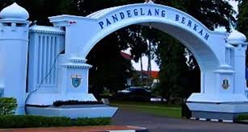

Menelusuri Sejarah Kota Pandeglang- Banten

Sejarah Berdirinya Pandeglang- Banten
Nama "Pandeglang" yang sekarang digunakan ini baik sebagai Ibu Kota Kabupaten maupun sebagai nama Kabupaten hal ini ada beberapa pendapat antara lain
Pandeglang yang berasal dari kata Pandai Gelang yang artinya orang tukang atau tempat menempa gelang. Pendapat ini terutama dikaitkan dengan legenda "Si Amuk" yang konon kabarnya pada Zaman Kesultanan Banten, di Desa Kadupandak ada seorang tukang Pandai (tukang besi) yang termasyur pandai.
Meriam Ki Amuk (samping)
Sultan Banten yang memerintah pada waktu itu menyuruh tukang pandai besi di desa tersebut untuk membuat gelang meriam yang bernama si AMUK, karena di daerah lain tukang pandai besi tidak ada yang sanggup untuk membuatnya. Oleh karena pandai besi tersebut berhasil membuatnya maka daerah Kadupandak dan sekitarnya disebut orang Pandeglang yang selanjutnya berkembang menjadi salah satu distrik di Kabupaten Serang;
Meriam Ki Amuk (depan)
Pandeglang berasal dari kata Paneglaang yang artinya tempat melihat ke daerah lain dengan jelas. Hal ini seperti dikemukakan dalam salah satu Buku “Pandeglang itu asal dari kata Paneglaan, tempat melihat ke mana-mana”. Sedikit kita nanjak ke pasir, maka terdapat sebuah kampung namanya “Sanghiyang Herang” patilasan orang dahulu, awas (negla) melihat ke mana-mana yaitu “Pandeglang sekarang”.
Pandeglang berasal dari kata “Pani-Gelang” yang artinya “tepung gelang”. Pada Tahun 1527 Banten jatuh seluruhnya ke tangan Syarif Hidayatullah yang kemudian diperkuat untuk kepentingan perdagangan.
Sunda Kelapa yang diganti namanya menjadi Jayakarta sebagian dimasukan ke dalam Wilayah Banten. Cirebon kekuasaannya diserahkan kepada anaknya bernama Pangeran Pasarean yang wafat pada tahun 1552. Sedangkan Banten kekuasaannya diserahkan pada puteranya yang bernama Sultan Hasanudin (Tahun 1552-1570).
Bupati Pandeglang 2021-2026
Profil Bupati
Hj. Irna Narulita, S.E., M.M. (lahir di Jakarta, 23 Juli 1970; umur 50 tahun) adalah Bupati Pandeglang sejak 23 Maret 2016. Sebelumnya ia menjabat sebagai Anggota DPR RI periode 2014 hingga 2016. Irna Narulita merupakan istri mantan Bupati Pandeglang dan mantan Wakil Ketua MPR RI Achmad Dimyati Natakusumah.
Profil Wakil Bupati
Tanto Warsono Arban, S.E., M.E. (lahir di Bandung, Jawa Barat, 12 Januari 1983) adalah Wakil Bupati Pandeglang sejak 23 Maret 2016. Sebelum masuk dunia politik ia dikenal sebagai pengusaha muda yang pernah menjabat sebagai Ketua Umum HIPMI Banten (Himpunan Pengusaha Muda) Banten. Kemudian ia terjun ke dunia politik menjabat sebagai Ketua Komisi III DPRD Banten periode 2014 hingga 2016.
Profil Kota Pandeglang
Visi dan Misi Kabupaten Pandeglang 2021-2026
PANDEGLANG BERKAH, BERDAYA SAING & SEJAHTERA
- Memantapkan infrastrukur akses pendidikan, kesehatan dan pusat pertumbuhan ekonomi.
- Mendorong peningkatan kualitas Sumber Daya Manusia.
- Meningkatkan kualitas pelayanan publik.
- Meningkatkan kemudahan berinvestasi dalam pengelolaan Sumber Daya Alam yang berkelanjutan dan berwawasan lingkungan.
- Meningkatkan pemberdayaan masyarakat dalam upaya peningkatannilai tambah sektor pertanian, perikanan, pariwisata, dan sentra industri kecil dan menengah.
Geografi
Kabupaten Pandeglang merupakan salah satu kabupaten di wilayah Provinsi Banten. Letaknya barada di ujung paling barat Pulau Jawa dengan luas wilayah 2.746,89 km²
Distrik Kabupaten Pandeglang
Makanan Khas
- Balok Menes Pandeglang
- Emping Menes
- Apem
- Angeun Lada
- Rabeg
- Jojorong
Data Pendidikan Kabupaten Pandeglang
| Pendidikan Formal |
TK atau RA |
SD atau MI |
SMP atau MTs |
SMA atau MA |
SMK |
Perguruan Tinggi |
Lainnya |
| Negeri |
1 |
SD 886 |
123 |
22 |
10 |
0 |
1 |
| Pendidikan Formal |
TK atau RA |
SD atau MI |
SMP atau MTs |
SMA atau MA |
SMK |
Perguruan Tinggi |
Lainnya |
| Pendidikan Formal |
TK atau RA |
SD atau MI |
SMP atau MTs |
SMA atau MA |
SMK |
Perguruan Tinggi |
Lainnya |
Batas Wilayah
Utara yaitu Kabupaten Serang
Timur Yaitu Kabupaten Lebak
Selatan Yaitu Samudra Hindia
Barat Yaitu Selat Sunda, Lampung
Alamat Kantor Bupati
Jl. Bhayangkara No 3, Kecamatan Pandeglang, Kabupaten Pandeglang, Provinsi Banten – 42211
Kabupaten Pandeglang- Banten
0253201030
Website Pemerintah Pandeglang